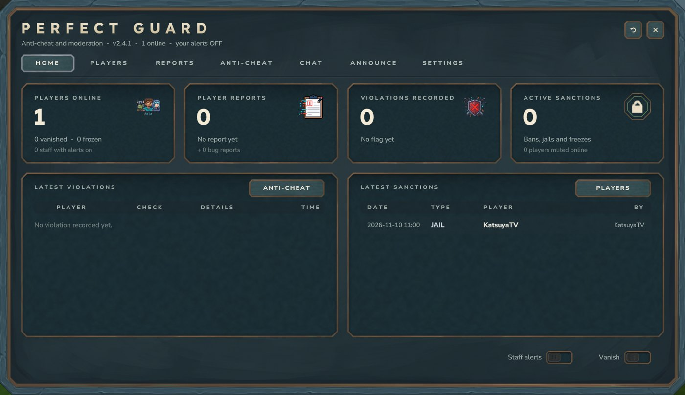

PerfectGuard
All-in-one anti-cheat and moderation solution. 7 detection types tuned against false positives, violation tracking, bans, mutes, reports, staff tools and a full in-game staff panel.
| Version | 2.4.1 |
|---|---|
| Platform | Hytale Server Plugin -- Update 7 (server 0.7.6) |
| Languages | EN, FR, ES, DE, IT |
Installation
- Drop
PerfectGuard-2.4.1.jarinmods/ - Start the server
- Set your jail:
/pg setjailor Settings > Set jail here - Use
/pg menu
Updating? Just replace the jar: configs, bans, mutes, jails, reports and logs are kept.
Staff Panel (new in 2.4.1)

- Home -- players online, reports, violations and active sanctions, latest violations and sanctions, your staff alerts and vanish switches. Updates live.
- Players -- search, player file (status, violation level per check, warnings, reports, notes, history) and every action.
- Reports -- player reports and bug reports.
- Anti-Cheat -- recent violations, every threshold and switch, one Save button.
- Chat -- word blacklist and muted players.
- Announce -- chat, title and notification announcements with a preview.
- Settings -- auto-freeze / auto-jail levels, jail position, language, reload.
Every sanction asks for confirmation (who, what, how long). Each button checks the same permission as its command.
Anti-Cheat Engine
| Check | Description |
|---|---|
| Speed | Abnormal movement speed; the limit follows the player's real speed (effects, gear bonuses) |
| Fly | Unauthorized flight; falling, climbing and swimming are ignored |
| FastBreak | Impossibly fast block breaking |
| FastPlace | Impossibly fast block placing |
| Reach | Melee hits beyond normal range, measured to the target's body (bows, projectiles and effects are never counted) |
| Nuker | Mass block destruction |
| AutoClick | Inhuman click rates |
Violations accumulate (VL). Auto-freeze at threshold, auto-jail at higher threshold. VL decays over time. Creative mode, allowed flight, gliders and mounts are ignored by the movement checks, and creative builders are never flagged for fast break / place. Players with perfectguard.bypass are ignored.
Moderation Tools
- Bans -- Permanent + temporary with reasons
- IP Bans -- Block IP addresses
- Mutes -- Permanent + temporary
- Warnings -- Issue and track per player
- Jail -- Teleport cheaters to jail
- Freeze -- Freeze player movement
- Vanish -- Invisible staff mode
- Inventory Inspect -- View player inventory
- Player Notes -- Private notes per player
- Reports -- Player-submitted reports
- Word Blacklist -- Block words in chat
- Announcements -- Title, notification, chat
Jail
A jailed player is teleported to the jail, kept there, and loses every permission until released: no command that needs a permission works for them, even for staff or OP. On release (by staff or when the time is up) their own permissions are back instantly, exactly as before -- only Hytale's deny-all node -* is added while jailed, and a -* set by an admin by hand is never removed. Before removing the plugin, release every jailed player.
Commands
| Command | Description | Permission |
|---|---|---|
/pg help | All commands | perfectguard.mod.menu |
/pg menu | Moderation UI | perfectguard.mod.menu |
/pg alerts | Toggle alerts | perfectguard.mod.alerts |
/pg vanish | Toggle vanish | perfectguard.mod.vanish |
/pg freeze <player> | Freeze | perfectguard.mod.freeze |
/pg ban <player> <reason> | Permanent ban | perfectguard.admin.ban |
/pg tempban <player> <dur> <reason> | Temp ban | perfectguard.admin.ban |
/pg unban <player> | Unban | perfectguard.admin.ban |
/pg mute <player> <reason> | Mute | perfectguard.mod.mute |
/pg unmute <player> | Unmute | perfectguard.mod.mute |
/pg kick <player> <reason> | Kick | perfectguard.mod.kick |
/pg jail <player> [minutes] | Send to jail (no duration = until released) | perfectguard.mod.jail |
/pg setjail | Set jail location | perfectguard.admin.setjail |
/pg warn <player> <reason> | Warn | perfectguard.mod.warn |
/pg tp <player> | Teleport to | perfectguard.mod.tp |
/pg invsee <player> | View inventory | perfectguard.mod.info |
/pg report <player> <reason> | Report | perfectguard.report |
/pg reload | Reload config | perfectguard.admin.reload |
Special Permissions
| Permission | Description |
|---|---|
perfectguard.bypass | Bypass all anti-cheat checks |
perfectguard.staff | Receive violation alerts automatically |
Configuration
Most settings can be changed from the panel (Anti-Cheat and Settings tabs). Defaults include:
{"lang":"EN","speedThreshold":12.0,"flyDuration":3.0,"reachMaxAttackDistance":4.5,"autoFreezeVL":15,"autoJailVL":30,"vlDecaySeconds":30}Data is saved crash-safe in mods/KatsuyaTV_PerfectGuard/.
FAQ
False positives?
2.4.1 removed the known ones (archers, effect damage, creative, gliders, mounts, speed bonuses). If a check still flags honest players, raise its threshold in the Anti-Cheat tab.
Where is jail?
Use /pg setjail at your desired location.